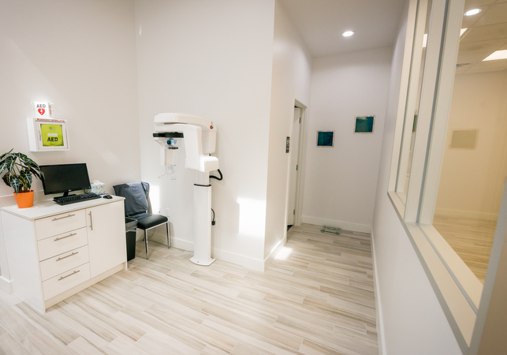

West Gray Dental · Houston
Experience dentistry with a personal touch.
A welcoming space. Thoughtful treatment. Care centered around you.

A practice with a personal touch
Thoughtful care.
Distinctly West Gray.
In Houston’s Montrose neighborhood, West Gray Dental brings together general, cosmetic, and restorative care in a welcoming, naturally lit space.
The practice’s approach emphasizes oral health, aesthetics, comfort, and helping you make informed decisions about your care.
- Personalized dental treatment
- Modern dental technology
- A conservative, patient-focused approach
The art of feeling at ease
Where dentistry
meets art.
A little creativity changes the experience. With light-filled interiors and an appreciation for design, West Gray Dental has provided a setting for work by local Houston artists.
Dent’Art is part of our story: a meeting of dental care, artistic expression, and community.
Discover Dent’Art
Take a look around
A space to
feel good in.
Natural light. Thoughtful details. An unmistakably Montrose point of view.
Select a photograph to take a closer look.From hello to feeling at home